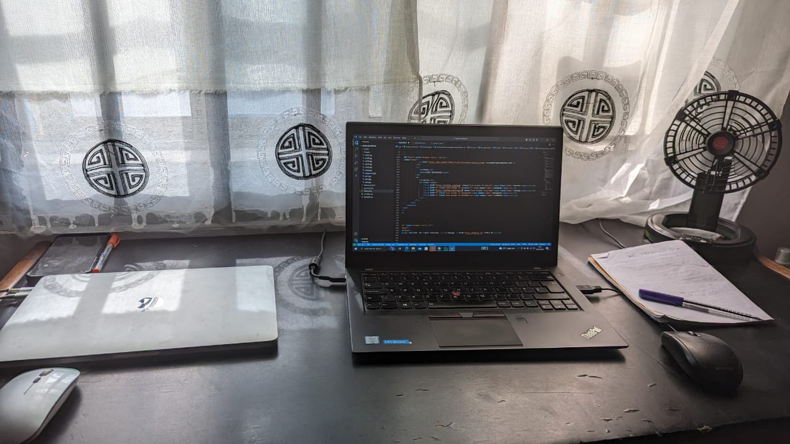

Soft Skills
Communication: Ability to convey complex technical information in a clear and understandable manner to non-technical stakeholders.
Critical Thinking: Capacity to analyze data objectively, identify patterns, and draw logical conclusions to solve problems.
Attention to Detail: Being meticulous in data analysis, ensuring accuracy, and recognizing subtle trends or anomalies within datasets.
Adaptability: Flexibility to work with different data sources, tools, and methodologies, and to adapt to changing project requirements.
Time Management: Ability to prioritize tasks, manage deadlines, and efficiently allocate time and resources to meet project goals.
Continuous Learning: Commitment to staying updated on emerging technologies, tools, and best practices in data analysis through self-directed learning and professional development opportunities.